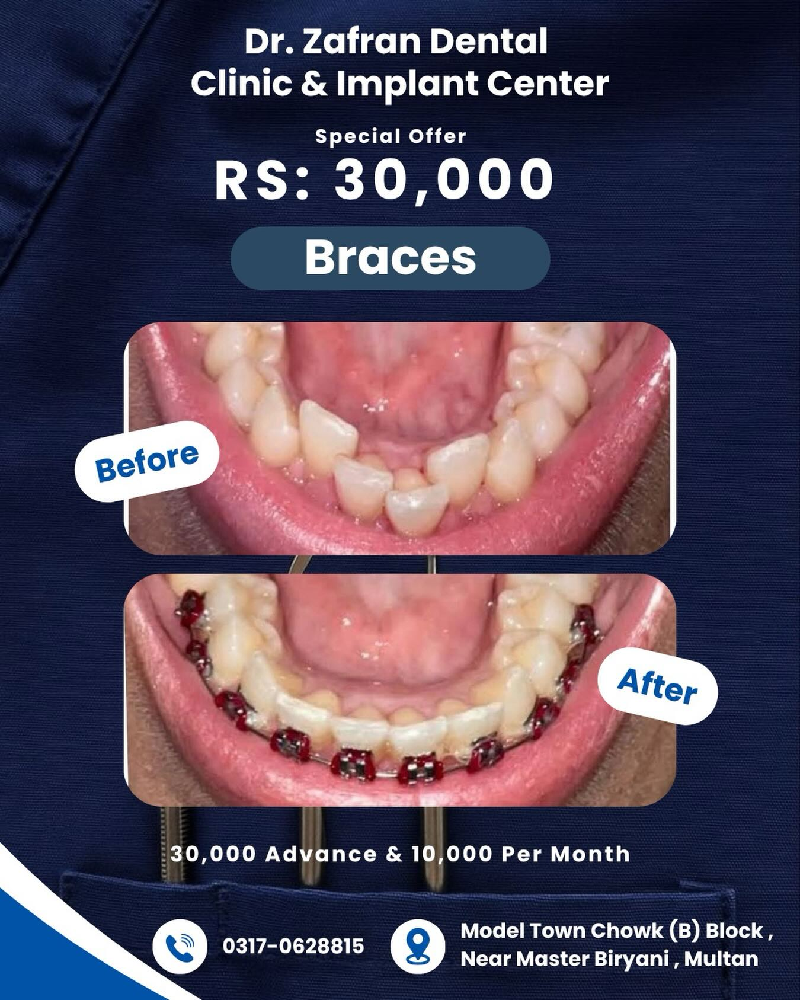

Dental Implants
Implant-supported options for replacing missing teeth after appropriate dental assessment.
Enquire → Dr. Zafran Aslam · Model Town, Multan
Dr. Zafran Aslam · Model Town, MultanFrom routine dental care to implants, orthodontics and restorative treatment, Dr. Zafran’s clinic offers a convenient local option with direct contact and appointment enquiries through WhatsApp.
Rating and review count shown from the clinic’s Google listing checked on 3 Oct 2026.

This concept takes visual cues from Dr. Zafran’s existing signboard, navy-and-blue promotional material and warm wood clinic interiors, then gives them a cleaner, more premium digital treatment.
Services below are based on the clinic’s public promotional material. Suitability and treatment plans should always be confirmed directly with the dentist.
Implant-supported options for replacing missing teeth after appropriate dental assessment.
Enquire →Treatment intended to preserve a tooth when its inner pulp has become inflamed or infected.
Enquire →Orthodontic options featured by the clinic for improving tooth alignment and bite.
Enquire →Professional cleaning to remove plaque and calculus build-up and support gum health.
Enquire →Repair-focused treatment including fillings and restorations for damaged teeth.
Enquire →Options for rebuilding or replacing teeth through fixed or removable restorations.
Enquire →Patients often choose a dentist based on trust and familiarity. Using an authentic clinic portrait makes the website feel personal from the first visit instead of like a generic healthcare template.
Professional qualifications and designations will be added once confirmed by Dr. Zafran, so nothing on the live site is overstated.
These are original high-resolution clinic images supplied for this concept, used to create a more authentic visual identity.

The clinic’s own promotional material includes braces and clear-aligner treatment. Any specific offer, price or payment plan should be reconfirmed before being published on an official website.
Ask about orthodontic treatment →
The clinic’s current Google listing shows a 5.0 rating from 67 reviews. Individual review excerpts are not reproduced here until they can be attributed and checked accurately.
Read Google reviews →Model Town Chowk, B Block, near Master Biryani, Multan 60000, Pakistan.
Hours shown from the Google business listing and should be reconfirmed before an official launch.
This opens WhatsApp with a prepared message. Sending it requests an appointment; it does not confirm a booking.